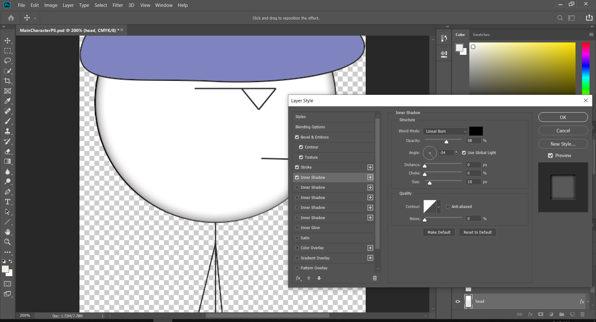

Interactive Animation
Save Me Game-Final Project
Planning

For this project I decided to make an online walking game where there is a ‘stickfigure’ who wants to be home as soon as possible and does not want to interact with anyone due to lack of energy. The stick figure do not have a specific role, gender so everyone could easily play.
The plot is mainly about a tired stick figure who is done with the day and really wants to go home without interacting with anyone as that could drain energy. The main enemies of the stick figure are the hyper stick figure who decreases health if they interact and the talkative stick who drains the main stick figure’s (your characters) figure and these two can be hard to avoid. The main stick figure will have to avoid those two and eventually get home.
The hyper stick figure can be a bit hard to avoid due to being too hyper and energetic so in some cases jumping over them can be hard. This was made on purpose since I wanted to add a bit of humour into it. The reason why is because the hyper stick figure’s energy alone can be too much to handle for the main stick figure.
The main plot for this whole game is to make the stick figure arrive at home in peace without their energy bar completely draining. If the user fails to do that the game will automatically start again because the main stick figure really wants to get home and nothing can stop them from achieving what they like.
Also, the game has a start screen and an end screen. The start screen explains the game and the end screen thanks the user.
Design Decisions
Overall
The design was based on old flash games to give a bit of nostalgic feeling. These games used to be very popular in the past and a lot have played with it before. The target audience are pretty much anyone who are bored and just want to do something.
Visuals/Looks
As for the design of the aesthetics and visuals, I made sure to do the following:
- Having contrast between the characters and background and also the start screen and game over screens background and text as well.
- Keeping it consistent by having similar looking characters and an overall simple looking object to match the aesthetics of my game as much as I could.
- Not adding too many unnecessary things in the game and trying to keep the harmony.
- Using a readable font.
- Having balance by having both dark and lighter colours.
- Leaving spaces around the game.
Aesthetics and Decisions
As for the aesthetics I went for an old classic flash game style to give it a bit of nostalgic feeling. As for the objects I decided to go for a simple art style since my main characters are stick figure and adding too many details to the other objects will end up being inconsistent with the characters. As for the functions I added the button for start and play again at the bottom since users would normally like to know about the title of the game first rather before playing it.
The characters and the fonts(which were used in the start and end screen) were mainly based on stick figure like memes which are probably used over and over again for ages and a lot of people seem to enjoy those type of memes even now. The font used is impact which is a very commonly used meme font. According to Vox there is even a history behind why this typeface has been used in memes for years and years. To get a little creative I also added some anime like elements so my stick figure may have a bit of an anime like face.
Image examples:
https://www.trzcacak.rs/imgm/hwJwwob_cereal-guy-png-transparent-images-cereal-stick-figure/
http://sadmoment.com/computer-guy-meme-decides-to-stay-home-this-weekend/
http://tipsgeneral.com/how-to/create-your-own-meme-comics-with-rage-builder-[geek-fun].html
https://www.123rf.com/photo_15008260_anime-facial-expressions-01.html
About the placement of things. Most of it were according to some small plans that I made after doing some research and using my past knowledge on these kinds of game. Some are:
- End points are normally at right but that’s exactly why I added it in the left corner down because most of the games I have played in the past normally want to continue an adventure or get to an exciting ending point such as Super Mario Brothers or Kirby. However, the stick figure just wants to go home and be where they can be in peace so I thought a corner to the left would be a good idea.
- Normally places where the main stick figure can either hide(The user can’t see them in one case) from others or be in a location where there is a need to jump to get by have healing hearts.
- The game was intended to troll the user a little bit to make them think they should go to the right but the reality was the end point is located at the left.
Things that were planned but not included
Unfortunately, sometimes some people tend to over plan their things and then suddenly panic. I am exactly one of those people. I planned this project three times but ended up changing them again and again. As for this game which was my final decision. There were things I wanted to add but did not manage to at the end:
- Background music
- More animation
- Each stick figure in different walking states.
- Exit and pause button on the game stage.
- Labels for the energy bar and an actual house for the stick figure but there was only a key.
Software used
Assets
As for my assets I used Illustrator to draw the basics of my characters and other designs and added more detail to them with photoshop. I find illustrator much easier for drawing sketches or the base of my assets in general. Photoshop on the other hands seems to be better at being used for details since it is a tool that is used a lot for editing as well.

Then I decided to make my sprite sheets with animate to use them for my game’s animations as animation is basically a software designed to create animations in general. The reason why I did not use it to just make an animation is mainly because the game development software I was using had it’s own animation maker and I wanted to directly implement it there.

After that I used Paint 3D to reduce their size. Even though illustrator and photoshoot already do that but I noticed the quality being slightly better in my actual game when doing it with 3D Paint which I find odd.
As for the sound I unfortunately only was able to add one to the start button which was not even intended.However it made a very click like voice which I heard in many other games therefore I ended up keeping it like that. The sound was not mine. Source:
"Ambience, Night Wildlife, A.wav" by InspectorJ ( www.jshaw.co.uk) of Freesound.org
Functionality
For the game itself I used gamefroot which is a game developing website used for making mostly mini games. It is a bit flicky but nice to use overall. It also saves each versions of your game so there is no need to version control because it does that for you. I also ended up using some of the assets it had provided which are free to use. The key and energy bar are the assets which belong to the site. The rest of the assets however(like the blocks, stick figures, backgrounds, screens and ect) or pretty much anything else belongs to me.

The assets were mainly kept in different folders and the game itslef was being backed up by the game maker.
Exported Format
The assets were mainly exported in png format to keep quality.(The animations were ecported as sprites with a png format as well.)
Deployment
I ended up deploying it as an iframe. The reason I did this is mainly because the game was already published by the software itself. Therefore, the fastest and safest way in my opinion was to just deploy it as an iframe.